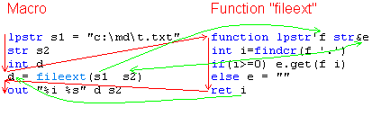

Why and how to create functions
How to receive and return values
Passing and returning strings, arrays, etc
See also: user-defined functions, about functions, declaration (parameters etc), programming in QM
A user-defined function is a macro that can be called from other macros. You create a function using menu File -> New -> New Function. You can place functions anywhere except in System folder. A function can be called from any macro/function/menu/toolbar. Also you can create sub-functions in code of other macros/functions.
Sooner or later, you'll find that several your macros contain the same or similar code that performs the same operation. But you probably don't want to create or copy the same code again and again. You can create a function and place the code there. Then each macro could use the code by simply calling the function by name.
For example, you have two macros:
Macro1:
lpstr s1="c:\md\t.txt" str s2 int i get filename extension i=findcr(s1 '.') if(i>=0) s2.get(s1 i) else s2="" out "%i %s" i s2
Macro2:
lpstr a="d:\mm\fav.mp3" str b int c get filename extension c=findcr(a '.') if(c>=0) b.get(a c) else b="" out "%i %s" c b
Both macros use the same code to get filename extension. Instead of using the same code in each macro, you can create a function and place the code there. Create new function using menu File -> New -> New Function, and give it some meaningful name, e.g. fileext.
Function fileext:
/ function lpstr'f str&e int i=findcr(f '.') if(i>=0) e.get(f i) else e="" ret i
Now you can use the function in macros:
Macro1:
lpstr s1="c:\md\t.txt" str s2 int i i=fileext(s1 s2) out "%i %s" i s2
Macro2:
lpstr a="d:\mm\fav.mp3" str b int c c=fileext(a b) out "%i %s" c b
Now macros are not only shorter, but also easier to read (the function name says what the function does). Also, if you ever want to enhance the code that gets filename extension, you don't have to do it in all macros.
Below is shown how the function is called and executed. Red lines - execution flow direction. Green lines - passing and returning values. The second parameter is declared as reference (&), therefore the function receives address of variable e and can modify its value.

Here is an example of code at the beginning of a function:
/ function# a str's [str&so]
The / at the beginning means that this function can be called from code, but cannot be launched to run like macro. It can be followed by the name of a macro. Then, when you press the Run button, the macro would run instead of this function. You can set it in the Properties dialog.
The function statement defines function's parameters and return type. It does not include function's name.
# tells that this function returns an integer value. You can use 'int instead. See type declaration characters.
This function has 3 parameters: a, s and so. The [ ] shows that so is optional.
Parameters are local variables. They are created and initialized each time when the function is called.
a declares parameter a of type int (integer). The declaration also can be int'a or #a (# is type declaration character for int), but for parameters of type int it is not necessary. When the function is called, a receives copy of the value (argument) passed by the caller.
str's declares parameter s of type str (string). Instead you can use ~s. When the function is called, s receives copy of the value (argument) passed by the caller.
str&so declares parameter so that is reference to a variable of type str. When the function is called, so actually receives address of the variable passed by the caller. If the function modifies so, it actually modifies the caller's variable. Imagine that so is alias of the caller's variable. This method of passing arguments is called "by reference". It provides better performance, because string copying is eliminated. Also you can use this method to return one or more values. It is a good alternative to the ret statement, which copies and returns single value.
The function statement is optional. Use it when need parameters or when the function returns something (uses ret).
The ret statement is used to exit function and continue to execute caller's code (caller waits while function runs). It also can return some value. It is optional. If function exits not through ret, or ret does not return a value, the function returns 0. See example below.
There are several ways to pass strings to functions. Each way has its advantages and disadvantages. Below are examples. For simplicity, the examples have only single parameter, although any number, type and order of parameters could be used.
1. Function begins with
function lpstr's ;;or function $s
Then you can pass any string. If you accidentally try to pass a number, you get error. I use this way in most my functions because it is fast and type-safe. If I need to use str functions with s, I assign s to a str variable inside the function. But if you don't know what is lpstr and how to use it, use way 2 or 3 instead. Although the function can modify the string, you should never do it (use way 3 instead), because the caller may pass a constant.
2. Function begins with
function str's ;;or function ~s
Then you can pass any string or number. Numbers are automatically converted. Advantages: easiest, does not require knowledge about lpstr; s can be manipulated using str functions without at first storing to a str variable. Disadvantages: whole string is copied, which is slower and in case of large strings requires much memory; not error if you accidentally pass a number.
3. Function begins with
function str&s ;;or function ~&s
Then you must pass a str variable. The function can modify the variable. Usually used to return string values (instead of using ret). An example is given above (function fileext). Advantages: fast and type-safe. Disadvantages: you cannot pass string constants (e.g. "some text") or variables of other than str type.
Also can be used function str*s, which is similar to 3 but requires knowledge about working with pointers.
To return strings, the function may begin with function'str or function'lpstr, and use ret. Although such functions are easier to use, but they are dangerous. You must understand variable scope, etc. Therefore, the preferred way to return string values is the way 3 described above.
Safe arrays (and not only str arrays) and user-defined types also usually are passed and returned like strings using the way 3, because it is fastest (does not copy whole data) and safest. Example function:
function ARRAY(str)&a
Passing an interface pointer using 3 is slightly faster, although passing it using 2 usually also is quite fast and does not copy whole object.
Variables that you declare in a function are local to the function (unless you declare them as global or thread). They are destroyed when the function exits. Even if the function is called multiple times, its variables do not retain values between calls. Local variables are visible (can be used) only in that function. Caller's variables are not visible in the function. Parameters (used in function statement) also are local variables.
Read more: variables, declaring variables, variable scope
See example below.
Below is an example function. It does nothing useful, but shows something that can be useful in functions.
/ function# a str's [str&so] What it does ... Returns: ... a - ... s - ... so - ... REMARKS ... EXAMPLE str s FunctionName 1 "abc" s out s opt noerrorshere 1 ;;pass errors generated in this function to the caller. Other way to do it: err+ end _error (at the end of this function). spe -1 ;;set speed to be equal to caller's speed (initially function's speed is 0). Of course, this is not useful in functions that don't have macro commands that are affected by spe. if(a=0) end "invalid argument" ;;validate a: if a is 0, generate error. Error is generated in caller. If caller does not use "err" statement to handle it, macro ends. if(getopt(nargs) < 3) ;;if third argument is omitted ... (more code) ret ;;exit function and return 0 if(&so) ;;if so is valid (caller may pass 0, or omit third argument) so.from(s a) ;;modify the variable that was passed by reference ... (more code) wait -2 ;;autodelay (wait number of milliseconds equal to caller' speed). You may consider to add it at the end of some functions. ret 1 ;;exit function and return 1 here ret is not necessary (the function will return 0)
You should not pass passwords to nonsecure user-defined functions. You should use encrypted passwords. A user-defined function that accepts a password is secure only if it matches all these requirements:
1. Is encrypted.
2. Supports encrypted password. That is, contains code like this:
truepassword.decrypt(16 encryptedpassword "encryptionkey")
Here truepassword is a str variable, encryptedpassword is the password argument, encryptionkey is an encryption key that should be unique to this function. Read more about str.decrypt and str.encrypt.
To encrypt passwords, can be used Options -> Security dialog or str.encrypt. When encrypting a password, QM extracts the encryption key from the function, and encrypts the password using the encryption key. An encrypted password has this format: [*XXXXXXXXXXXXXXXXXX*]. You can simply pass it to the function, like Function(a b "[*0123456789ABCDEF*]"), or embed it in a string, like Function(a b "user=Me;password=[*0123456789ABCDEF*];").
QM functions that accept password (net, AutoPassword, etc) support encrypted password.
3. Does not pass nonencrypted password to nonsecure user-defined functions.
4. Does not paste or type the password. Does not use anything that allows the password to be entered somewhere in visible form.
To enter a password into a password field of a certain program, use function AutoPassword. It is easiest and most secure way to enter a password from a macro. It cannot enter the password in a non-password-field.
To make your macro that uses passwords really secure, you should also encrypt it and use inpp to ask for password to run it. You can use the "Password input box" dialog for this.